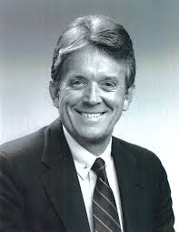
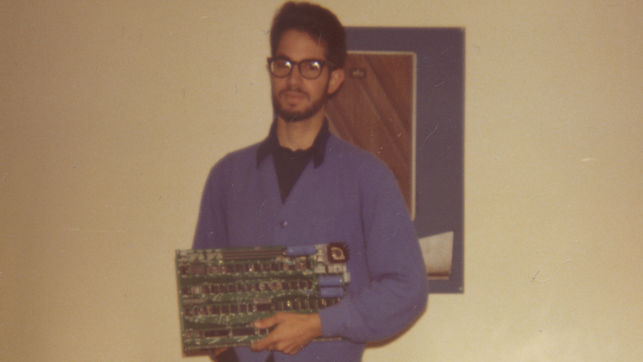

Steve Jobs

Steve Wozniak and Steve Jobs were extremely close friends and productive working partners. They helped one another accomplish lots and produced some of the most creative technology of their time. Now their products are further imporving and their work is in almost everyone's hands.
Ronald Wayne

Ronald Wayne helped with the development of the first ever Apple Computer. Wayne was the co-founder of Apple Computers and provided administrive oversight for the new venture. Working closely with both Steve Wonziak and Steve Jobs, the three were very smart and disciplined as a team.
Bill Fernandez

Bill Fernandez helped Steve Wozniak make his first ever computer. Later on, Fernandez went on to be the first emplopyee at Apple. He became closer friends with Wozniak along the way. Later meeting Steve Jobs and working closely with him, Fernandez was a big influencer of Steve Wozniak.
Steve Wozniak Background and Accomplishments
Stephen Gary Wozniak, is an American inventor, programmer and technology entrepreneur who co-founded Apple in 1976, which later became the world's largest information technology company by revenue. He helped with the creation of the first ever Apple Mac Computer. Working along side with Steve Jobs, the two made history when Apple blew up to what it is now. He is an under the radar intelligence and helped change our world by inventing technology such as this. Without him, most Americans would never own an Apple phone.